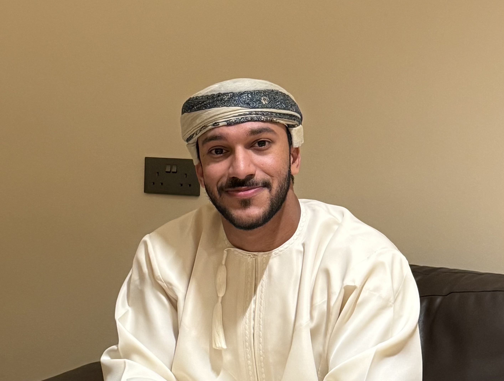

الانطلاقة تبدأ من الطقس والفراغ

صانع محتوى التفرد عنوانه
صناعة المحتوى الرقمي عالم متسع لكل من يفكر خارج الصندوق وشغوف لكن الأمر مختلف بالنسبة لسعود المعمري، بدأت رحلته بالصدفة وتحولت إلى مشروع يوازن بين الإبداع والتأثير. بدأ كصانع محتوى شخصي، من خلال مشاركة صور تحمل طابعًا فنيًا، فتحولت هذه الهواية إلى مشروع تجاري بعد حصوله على عروض لتقديم خدمات صناعة المحتوى. واليوم، ينجح سعود في الجمع بين المحتوى الأصلي والإعلانات بطريقة سلسة وذكية.
الإلهام والبدايات..
نشأ سعود في منزل يهتم بعالم الملابس، خصوصًا من إخوانه، مما جعل شغفه بالفاشن أمرا طبيعيًا وقال:" ورثت الأمر منهم وأضفت عليه قيمة وهي صناعة المحتوى". بالنسبة له، الملابس والألوان ليست مجرد مظهر خارجي، بل هي ما يعكس شخصية الإنسان ويترجمها بصريًا. خلال سنواته الجامعية، واجه تحديًا كبيرًا في التوازن بين الدراسة وصناعة المحتوى الرقمي، لكنه برز في تلك الفترة كشخص ناجح، لأنه مثلما صرح:" أغلب الوقت كانت كفّة تغلب على الثانية، حسب الاحتياج والضرورة، لكن تنظيم الوقت كان الأساس للحفاظ على الاستمرارية، والاستيقاظ المبكر". وأشار أن التفكير الإبداعي وخارج الصندوق كانت أهم المهارات التي ساعدته في صناعة محتوى جذاب وممتع.
المحتوى البصري والتفاعل..
يركز عند تصميم المحتوى على أن يكون مريحًا بصريًا وسمعيًا، كذلك إبراز الجانب الإبداعي والاختلاف، والأهم مراعاة القيم الدينية والاجتماعية. أما التفاعل الذي يسعده أكثر فهو التعليقات ومشاركة الآراء، ويقول:" العالم الافتراضي وسيلة للنقاش والتواصل والاستفادة، والتعليقات هي الطريقة الأفضل للاستفادة من الطرفين".
أما عن اختيار المواضيع، يعتمد غالبًا على الأفكار اللحظية المرتبطة بالواقع أو الأحداث المنتشرة، بينما المحتوى الإعلاني يكون غالبًا بناءً على طلب العميل ويتم إخراجه لشكل إبداعي.
الفاشن والهوية البصرية..
بالنسبة له، الفاشن هو فن وثقافة ووسيلة للتعبير عن الذات. يركز على الجمالية يوليها أولوية تتفوق على بعض التقاليد الاجتماعية التي لا يرى أن لها جدوى من الأساس، معتادًا على دمج أسلوبه الشخصي دون الانصياع للاتجاهات العالمية التي قد تتجاوز الحدود الطبيعية للرجل. ويؤكد أن تنسيق الألوان والخامات هو الأساس الذي يجعل أي ستايل جميلاً بغض النظر عن شكله. نصيحة للراغبين في دخول عالم الفاشن على منصات التواصل الاجتماعي: "البداية أولاً، وتجنب السعي للمثالية، مع التعلم المستمر ".
الإبداع والأفكار..
يعتمد على الأفكار التي تولد في لحظات عشوائية، تُترجم أولاً إلى نص ثم تُطبق. ويقول:" الانطلاقة تبدأ من الطقس والفراغ، ومن ثم التفكير بعمق وأحيانا الاطلاع على محتويات وسائل التواصل الاجتماعي كتغذية بصرية وعقلية". أما المصادر الرئيسية للاستلهام فهي تيك توك، إنستجرام، وبنترست، مع الاعتماد على الواقع والخيال في المقام الأول.، ويقيس نجاح أي منشور من خلال ردود الفعل والتعليقات، وأحيانًا المشاهدات
التفاعل والتأثير..
أسس علاقة تفاعلية مع جمهوره عبر إشراكهم في المحتوى والاستماع لآرائهم والتواصل المباشر معهم. أما التعليقات السلبية ويتعامل معها بالتجاهل، ولكن يأخذ النقد البناء بعين الاعتبار. ويرى دوره كمؤثر في تغيير نظرة المجتمع للموضة كما وضح أنها:" مسؤولية كبيرة نظرا لقلة الأشخاص الذين يقدمون هذا النوع من المحتوى في سلطنة عمان، لكنني أحاول جاهدا لنقل صورة إيجابية لهذا المجال".
رسالة وتجربة..
يقول لصناع المحتوى المبتدئين: "البداية، الاستمرارية، والإبداع هي الأساس".
نظرته المستقبلية في هذا المجال دلت على شغفه وابداعه، ويقول:" أرى نفسي في الخمس سنوات القادمة، مستمرا في صناعة المحتوى وربما بكثافة أكبر وبشكل تخصصي، وربما مرتبط بمشروعي الخاص. كلمته الأخيرة التي تلخص رحلته: " تفرد، لأن البداية والفكرة الأساسية تتمحور حول التفرد بالمحتوى، طريقة التصوير، وبطريقة تقديم كل شيء.